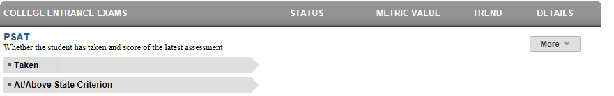

Dashboard Metrics


PSAT
Background
Student Dashboard Metrics
Because of the importance of college admission tests, many school districts across the nation, including Chicago, Charlotte, Dallas and New York, have incorporated metrics on PSAT/NMSQT® performance into their internal performance management dashboards. Moreover, the PSAT/NMSQT® is both a scholarship qualifying exam as well as a way to identify students with advanced course potential. In addition, during focus groups conducted with educators, the PSAT/NMSQT® Performance metric, as presented in screen shots of the student dashboard, was considered useful by 89% of those surveyed.
Primary Metric
- PSAT® Performance: whether or not the student has taken the Preliminary SAT and the student’s score.
Related Metrics
- SAT® /ACT® Performance: reports whether or not a student has taken the SAT® or ACT® and if they have scored at or above the specified state criterion. In addition, the SAT®/ACT® performance metric reports growth from the PSAT® (Preliminary SAT) to the SAT® for students who have taken both tests.
- Advanced Course Potential - Current Year: for the current year only , whether or not a student has demonstrated potential for advanced coursework based on state assessments (PSAT® (if taken, performance at greater than or equal to 80th percentile) and state assessment commended score at or above 2400) and whether or not they are enrolled in advanced courses (AP, IB or DE courses) in the four core subject areas.
User Interface
Dashboard Example
Figure 1 shows the College Entrance Exams metric as seen on the student dashboard.

Figure 1 Ed-Fi College Entrance Exams PSAT
Status Definition
For PSAT, the value displayed is the Selection Index Score.
Metric Indicator | Trend Comparisons | |||
Metric Name | Sub-metric Name | Metric Status Indicator | Compares: | To: |
PSAT | Taken | Red (No) = Not taken or if grade level is greater than 10 and fall administration date has passed N/A = no score exists and grade level is lower than 10th Green (Yes) = score exists | N/A | N/A |
At/Above State Criterion | Red (No) = If critical reading, mathematics, or writing value is less than 80% Green (Yes) = If critical reading, mathematics AND writing score is greater than 80% | current year | prior year | |
Trends
The trend indicator does not apply for these metrics.
Periodicity
Best practice is to upload the data for this metric at least annually prior to the beginning of the school year. Given that PSAT, SAT, and ACT tests are administered and received by districts several times throughout the year, upload the data monthly to capture the various test administrations (e.g., SAT and ACT exams are administered nearly every month and PSAT scores are available at the end of the calendar year).
Recommended Load Characteristics | |
Calendar | Throughout the school year |
Frequency of data load | Monthly |
Latency | Yearly |
Interchange schema | Interchange-StudentAssessment.xsd |
Tooltips
The standard tool tips for the metric definition, column headers, and help functions display for this metric.
The following are tooltips specific to the metric:
- The PSAT Selection Index Score must be displayed when hovered.
Business Rules
Data Assumptions
- PSAT scores are made available to the districts in December. PSAT does not have the opportunity for retakes.
- Best practice is to footnote transfer students (late enrollment) who do not have complete transcripts.
Computed Values
Table 4 defines how values are calculated for this metric. The result of the calculation displays in the Status column on the student dashboard.
Metric Values | ||
PSAT | Taken | Student has a Selection Index Score |
At/Above State Criterion | PSAT score is greater than 80% | |
Data Anomalies
Anomalies
Best practice is to footnote these anomalies:
- Late enrollees may have taken college readiness tests at their previous school
- Loading of data from multiple administration dates
- SAT does not have social security number.
Footnotes
Footnotes are used to provide addition data information concerning the metric. Footnotes are sequential for the entire page. Therefore, a metric's footnote may not begin with the number 1.
The following footnotes appear below the metric:
- The date the assessment scores were last loaded should be footnoted.
- Transfer students with an incomplete transcript should be noted.
Implementation Considerations
Student Identity
Maintaining a correct and consistent student identity is at the center of any education data system. Most systems use some sort of unique identifier. However, sometimes this identifier is entered incorrectly or sometimes different systems use different identifiers.
The UDM XML supports the interchange of multiple types of identifiers. The StudentReference is a complex type within the UDM to maintain the referential integrity of the student (that is, ensuring that the data associated with each student is accurately associated with the right student). The complex type of the student reference assists with implementing the accurate matching algorithm to identify a student by utilizing any of the individual attributes (e.g., Student Unique State ID, Student ID, Campus Local ID (with Campus ID), Name and Birth Date). For example, if the Student Unique State ID is unknown, you can find the student’s identity by their Student ID, First Name, Last Name and Birth Date.
PSAT/SAT/ACT Apparent Non-Participation
The SAT and ACT scores are administered throughout the year. Students’ non-participation can only be detected to the extent that the district has received and loaded timely test result data from SAT and ACT. Information from one district’s coordinator indicated the SAT and ACT deliveries of results were “random” throughout the year. To make the Taken indicator most effective, it is imperative that the SAT and ACT scores be received and loaded in the most timely manner.
PSAT/SAT/ACT Participation Expectation
Students may take the SAT and ACT anywhere from 9th through 12th grade and may take them multiple times. For example, in the Ed-Fi dashboard, a red status indicator displays at the 11th and 12th grade levels. Proper application of the metric requires the district or campus establish clear expectations for when students should take the SAT/ACT, and if a student has not taken either assessment, at what point an intervention is in order.
Drill Downs
Description
The PSAT/SAT/ACT metric contains drill downs to provide more insight on the historical test performance and objective and item level performance within each subject tested. The drill down is accessed by the "More" menu.
Drill Down Views
This metric includes the option to drill down for information that is associated with this metric. Table 5 lists the drill down views that are defined for this metric.
Detail | The detail view shows the PSAT scores for all of the dates that the student has taken the test. |
The objective is to provide a measure of college readiness progress for students.